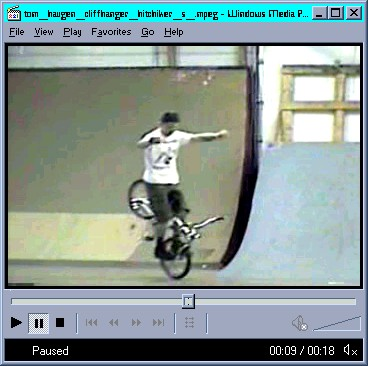
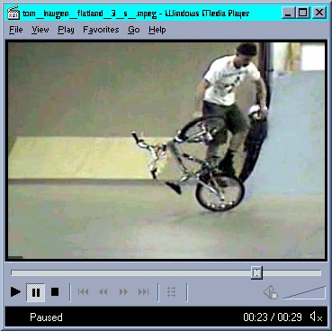
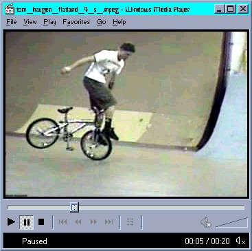
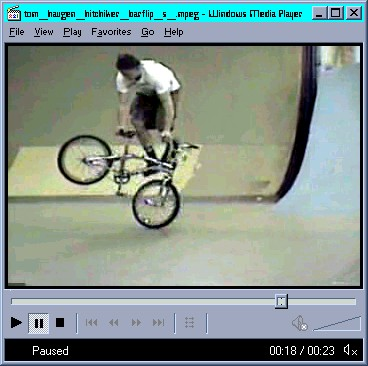
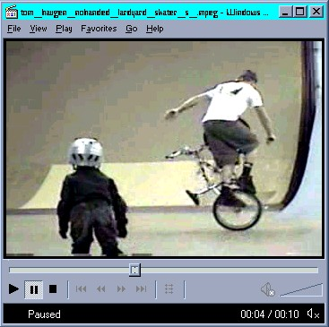
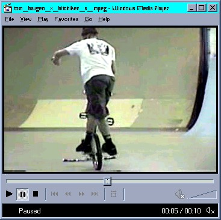

Tom Haugen flatland videos by ELY M.

cliffhanger to hitchiker - 1.36 mb

lardyard to decade - back wheel tricks - lardyards - 2.16 mb

funky chicken and whiplashes - 1.50 mb

hitchiker to barflips - 1.73 mb

no handed lardyard and little skater get in the way - 731 kb

cross footed hitchiker - 807 kb
whiplashes to lardyard - 2.13 mb
no handed lardyard - 1.40 mb
lardyard to bike drop - 620 kb
fast lardyard attempt - 1.37 mb
front wheel scuffing tricks - 1.5 mb
whiplashes to front wheel tricks to laryard 1 - 1.15 mb
Back to ELY M's BMX and other stuff page
Back to Tom Haugen Page
If I find my videos on your website or server.
I will get after ya and shred you up with my bike.